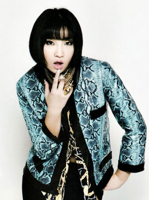

The Talent Behind 2NE1
BOM
Born Bom Park March 24, 1984 in Seoul, South Korea as the second daughter of her family. Moving eventually to the United States where she learned English. She is an actress, singer and dancer, currently with YG Entertainment as the main vocalist for 2NE1.
Park Bom's sister is Park Go Eun who is a cellist. In 6th grade, she left Korea by herself to study abroad in the United States. She graduated from high school through Gould Academy in Bethel, ME and enrolled into Lesley University with a major in psychology. Growing up in the United States, she would listen to Mariah Carey, whom she had a admiration for, she even quoted on a talk show. "I would listen to her songs during lunch and even forget to eat." Telling her parents that she wanted to pursue singing as a career, they would not allow her too. With the encouragement of her aunt, she secretly transferred to Berklee College of Music to follow her dream.
Park auditioned to become a singer for YG Entertainment and was rejected multiple times, after three years she was finally accepted and immediately became a trainee. She was place in 2NE1 as the main vocalist, along with CL, Minzy and Sandara Park.
In August, after finishing "I Don't Care" promotions, 2NE1 took a temporary hiatus with each member releasing their own solo singles. Bom's single, entitled "You and I" was the best performing of the three and took the number one spot on the Gaon Chart for the month of November. The single eventually won the Best Digital Single at the 2010 Mnet Asian Music Awards. By the end of 2011 it was reported that the single was downloaded 4,483,364 times, becoming one of the best-selling singles in Korean music history.
In late 2010, Bom was featured on GD & TOP's single "Oh Yeah" for their first collaboration album. She was also featured in the Japanese version of the song, as well as the MV for the Japanese version. "Oh Yeah" peaked at number two on the Gaon Chart upon release.
For the Infinite Challenge Seohae Ahn Highway Song Festival 2011, G-Dragon of Big Bang collaborated with Park Myeong-su to create a duo called GG. Bom was featured in their song "Having an Affair". The song went on to become an "All Kill" on various Korean music charts.
In 2011, it was announced that Bom would have a new digital single released before 2NE1's promotions for their second self-titled mini-album. The song was titled "Don't Cry" and was released on April 21, 2011. "Don't Cry" managed to top many of South Korea's music content providers' digital charts, later becoming a perfect all-kill on the music charts of Korea.
MINZY

Gong Minji was born January 18, 1994, she is better known as Minzy, she is a rapper, idol singer and dancer. She was born in Seoul, South Korea. Minzy is the grand-daughter of Gong Okjin, a well known folk dancer in her country. She moved to Gwangju, where she participated in many dance competition and contests during her younger years.
In 2009, she debuted along with YG Entertainment label mates CL, Park Bom and Sandara Park as 2NE1's main dancer, lead vocalist, lead rapper and maknae.
Minzy was discovered through the internet by YG that had been uploaded to showed her talent for dancing. The video had recieved many hot and praised for her dancing abilities. Because of her raising popularity on the internet, YG approached her and signed her, after which, she had became a trainee. Later was placed in 2NE1.
On July 16, 2009, she revealed that she had dropped out of high school to pursue her career with the musical group.
Her solo career consist of only two singles one was "Please Don't Go", that she and CL had released on the band's albun "To Anyone". Even though the song was the lowest of the three solos that band members had released, the song still managed 6th of the Korean Charts.
Her other single "Miracle", was collaborated with other SBS Friendship Project artists, didn't make the charts, but was still successful for her.
Minzy is known to be friends with several idols, such as f(x)'s Amber, Luna and was even mentioned in Sulli's 'Thanks to' section and Girls' Generation's Yoona, Tiffany, Sooyoung and Hyoyeon, Psy, Super Junior's Siwon, Miss A's Min, Kara's Goo Hara and as well as soloist IU. She is also close to Japanese pop star Koda Kumi. Big Bang's G-Dragon has named Minzy as his favorite junior.Also close with labelmates -Winner and IKON.
CL
CL born under the name Lee Chae-rin was born Febrauray 26, 1991 in Seoul, South Korea and had spent most of her early life in Japan and France, where she learned English, French and Japanese.
She comes from a family of academics: her grandfather being a physcists; her uncle works as economist; her aunt runs an art gallers and her father is a physics professor.
CL spent most of her childhood living in Paris, Tsukuba Science City and Tokyo. She attended international schools throughout her school-days. Her father encouraged her to listen to different genres of music. And she dreamed of becoming a singer when she was about 10. She had sent demo tapes to YG Entertainment since elementary school but did not get a reply. When she was 13, she moved back to Paris alone where she studied for two years. At the age of 15, she went to YG building and waited for a long time to meet CEO Yang Hyun-suk. She gave him her demo tape and then she landed a successful audition. CL has mentioned that over several months as a trainee for YG, she would practice until 3-4 in the morning and attend school the next day.
CL's first feature on a song recording was Big Bang's "Intro (Hot Issue)" in 2007. Later that year, she had her first stage debut at Seoul Broadcasting System's Music Awards alongside her label mates at YG Entertainment.Her first credited appearance in a song was in 2008, with Uhm Jung Hwa's "DJ," in which she rapped.[6] CL also appeared on YMGA's track "What" as part of the YG Family.
Her solo career consisted of her single with the band member Minzy for "Please Don't Go" was had been released in 2009 and was at number six on the chart by the end of November. In 2012 her and Korean rapper Kim Jin Pyo were featured in an new rap campaign for Addias Original, entitled "all Originals Make Moves", both the artist were noted for writing the lyrics for the raps that were presented as two videos.
In May 2013, YG Entertainment announced that CL will release her first solo single on the label in over five years at the end of the month with a promotions circuit to follow. The single title was originally intended to be "Bad Girl", but was retitled "The Baddest Female" following the release of Lee Hyori's "Bad Girls" music video. It was released on 28 May 2013 as well as the official music video that debuts on the same day.
DARA
Sandara Park born November 12, 1984, better known as Dara, is a South Korean idol singer and model. She is best known as being a member and the director of communications of the South Korean girl group 2NE1. She first gained major popularity on ABS-CBN's Star Circle Quest during her stay in the Philippines. Her younger brother, Park Sang-Hyun, better known as Cheondung, is a member of boy band MBLAQ under J. Tune Entertainment, a subsidiary of JYP Entertainment.
She was born in Busan, South Korea. When she was 10 her family moved to the Alabang, Muntinlupa City, Phillipines to start a trading business.
In 2004, during one of her school activities, she met Pauleen Luna, a former talent of ABS-CBN Corporation Channel 2's Talent Center. Luna encouraged Park to audition for Star Circle Quest, a reality-based talent search television program. Over the course of the season, she escaped elimination several times, and reached the final ten contestants. Her Korean ethnicity resulted in some trouble with the daily exercises set by the panel of Filipino judges. During the last elimination round (in which only five people advanced), Park received approximately half a million text votes. She eventually finished in second place behind Hero Angeles.
Park joined ABS-CBN's entertainment stable called Star Magic in the wake of her success in the show, with her projects ranging from commercial endorsements to television appearances. She starred in her first movie Bcuz Of U (2004), a three-story movie. She acted alongside Hero Angeles, Kristine Hermosa and Heart Evangelista. Park won "Best New Actress", her first acting award, in the 21st Philippine Movie Press Club Star Awards. Park and Angeles launched their first solo movie, Can This Be Love (2005) which reportedly grossed almost 100 million pesos. Park was also nominated for "Best Performance by an Actress in a Leading Role (Musical or Comedy)" at the 2006 Golden Screen Awards. Her third movie in the country was D' Lucky Ones (2006) wherein she was paired with co-SCQ alumnus, Joseph Bitangcol due to Angeles' decision to retire from show business. In the same year, her fourth and last movie Super Noypi was shown in Christmas 2006 and was an official entry into the 32nd Metro Manila Film Festival. The success of Park in the Philippines lead her to star in a drama series. One was Krystala, a fantasy series with Judy Ann Santos. She also acted in various series Crazy For You (2006) and Abt Ur Luv (2006) and television specials My Name is Sandara Park (2004), SCQ Reload: OK Ako! (2004) and Nuts Entertainment (2006) of GMA Network.
In December 2004, YG Entertainment's Yang Hyun Suk offered Park workshop classes in South Korea after seeing the KBS Documentary My Name Is Sandara Park. In March 2005, Park went ahead with the workshops, putting her career in the Philippines on hold. After six months, she resumed work in the Philippines, starring in several movies. She left the Philippines show business industry and returned to South Korea with her family on August 1, 2007. YG Entertainment announced the following day that Park had signed a contract with them.
On September 7, 2009, Park was the first among the members of 2NE1 to release a digital single. Entitled "Kiss", the song was produced by Teddy Park and was featured in Park's first commercial for Oriental Brewery's Cass Beer series alongside K-Drama actor Lee Min Ho. The song also featured fellow member CL as a rapper and peaked at #5 on the Gaon Chart.